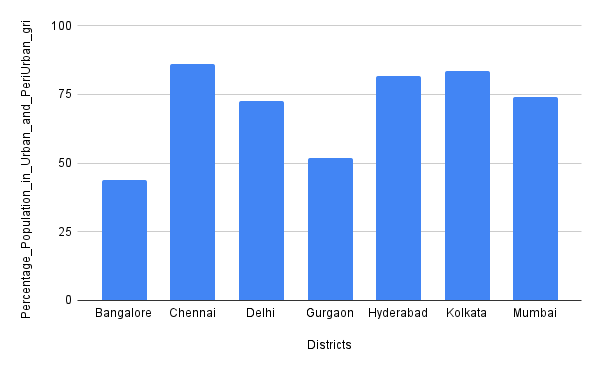
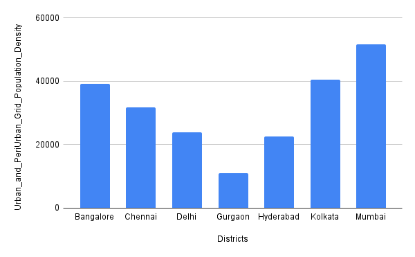
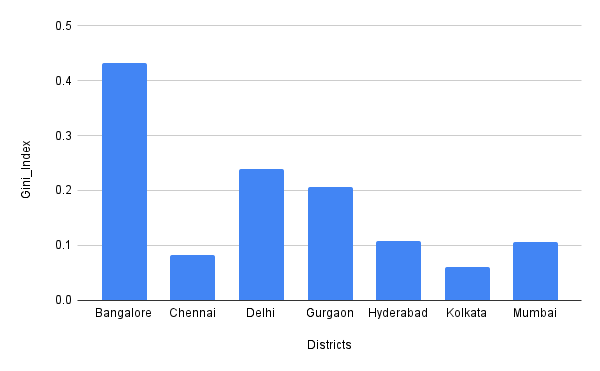
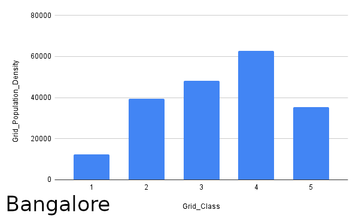
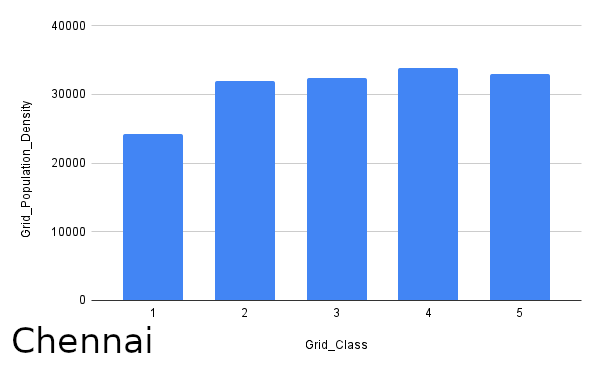
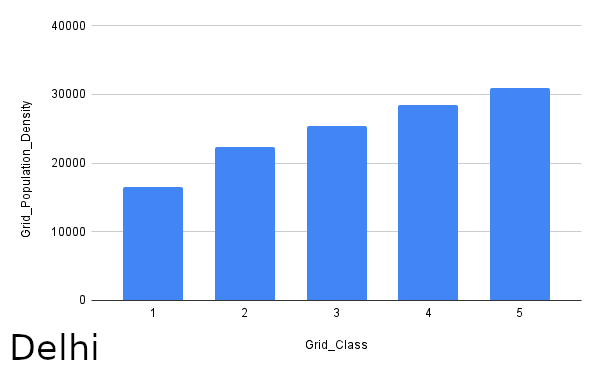
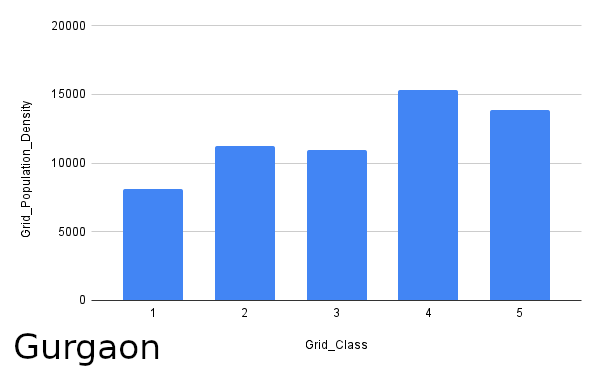
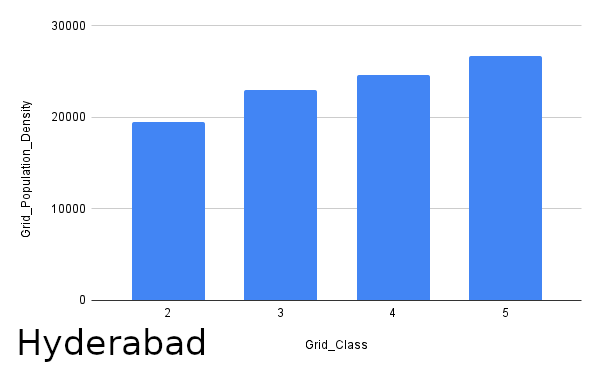
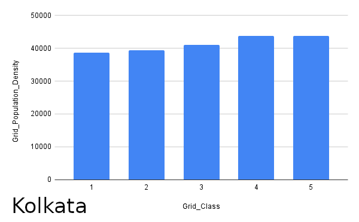
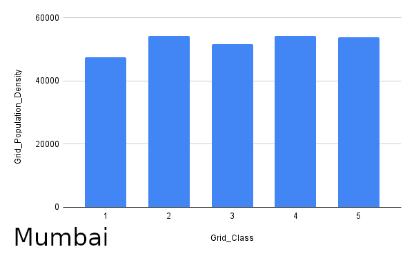

How Urbanised are these cities?
Method : (Population in urban and peri urban grids / Population
within District Boundary (in urban, periurban and rural
grids))*100
Inferences:
- Chennai has the highest percentage of its population living in urban and periurban grids Bangalore has the least
- All cities except Bangalore have more than 50 % of their population living in urban and periurban grids
- Except for Bangalore and Gurgaon, all other districts have approximately 3/4th of their population living in urban and periurban grids.

How Densely Populated are they?
Method:: Population in urban and periurban grids / number of urban
and periurban grids
Inferences:
- We can observe that Mumbai is most densely populated compared to other districts, and Gurgaon is the least densely populated.
- Mumbai has the highest population density, and also 3/4th of its population lives in urban and periurban grids which imply that these grids of Mumbai are very crowded and the rural grids are sparsely populated
- Gurgaon has the least population density, and only around 50% of its population resides in urban and periurban grids which imply that these grids are sparsely populated in Gurgaon, and a significant population of Gurgaon lives in rural grids too

Is The Population Distribution Uniform?
Method:: For each urban periurban grid obtained population of
grid, reported gini index for that distribution
Inferences:
- Bangalore has highest gini index implying population distribution is highly localised in some grids
- Kolkata has least gini index (¡0.1) implying the population is almost uniformly distributed in grids
- Bangalore, Delhi and Gurgaon have significantly high gini index implying population in these cities is not that uniformly distributed as compared to Chennai, Hyderabad, Kolkata Mumbai having gini index around 0.1

Which Parts of Cities are Most Densely Populated?
Method:: Population in Cx (C1,C2,C3,C4,C5) grids / number of Cx
grids for a district
Inferences:
- Population Density in Bangalore, Chennai, Delhi, Hyderabad Kolkata monotonically increases as we move from C1 to C4 as expected but decreases in C5 in Bangalore and Chennai, this may be due to underreporting at the time of census as C5 grids contain areas like slums and jhuggis predominantly occupied by the migrant population.
- Almost Uniform Population Density is observed among C1-C5 grids in Chennai, Kolkata Mumbai, implying that population is distributed uniformly, thus every grid class holds equal importance in these districts.







Bengaluru
Chennai
Delhi
Gurgaon
Hyderabad
Kolkata
Mumbai

To know more, refer to our research paper here :
Characterizing The Evolution Of Indian Cities Using Satellite Imagery And Open Street Maps
C. Bansal, A. Singla, A. K. Singh, H. O. Ahlawat, M. Jain, P. Singh, P. Kumar, R. Saha, S. Taparia, S. Yadav, A. Seth
ACM COMPASS 2020
Characterizing The Evolution Of Indian Cities Using Satellite Imagery And Open Street Maps
C. Bansal, A. Singla, A. K. Singh, H. O. Ahlawat, M. Jain, P. Singh, P. Kumar, R. Saha, S. Taparia, S. Yadav, A. Seth
ACM COMPASS 2020